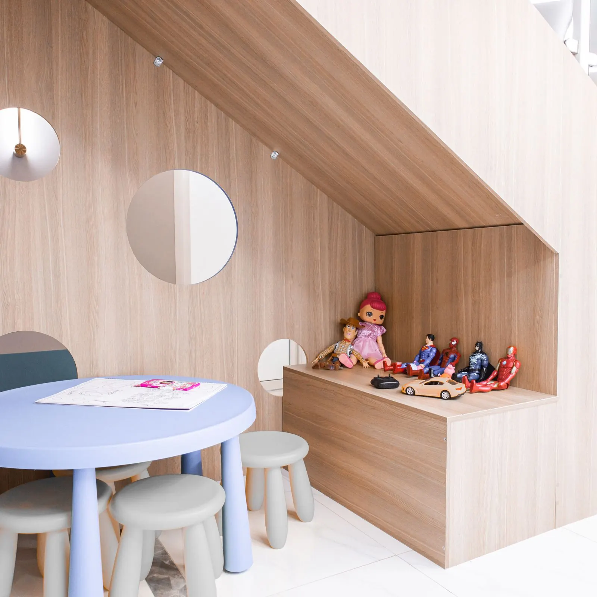
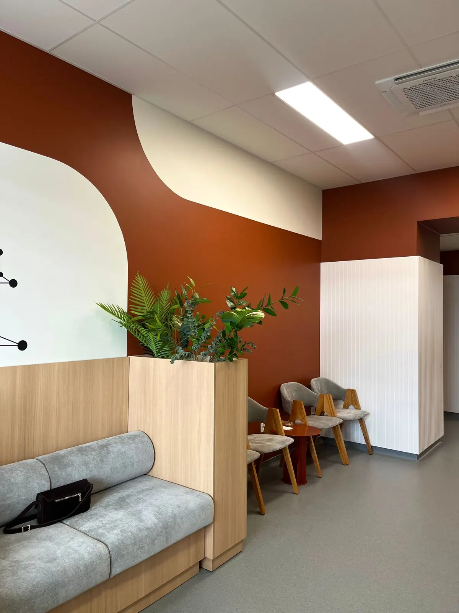
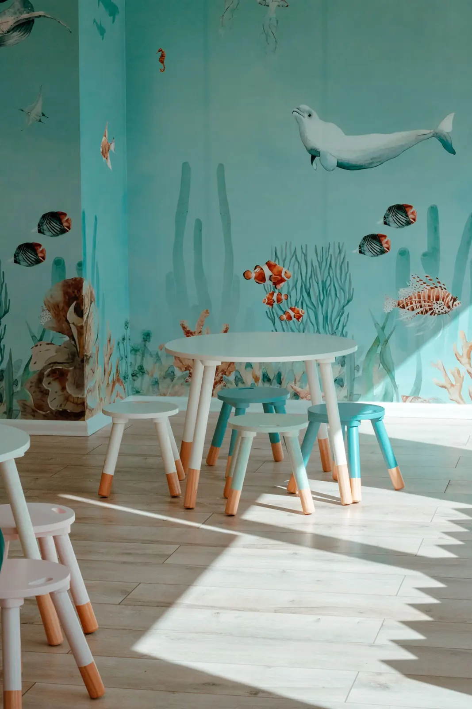
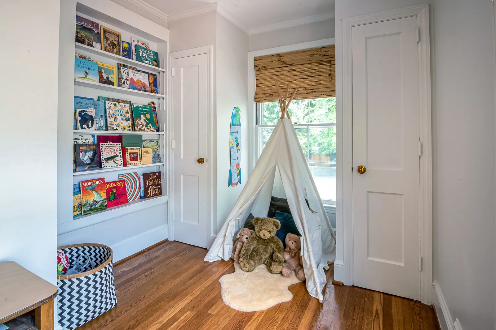
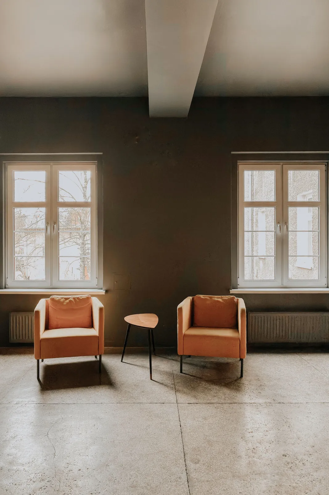

Início / O espaço
O espaço e a equipe
Um lugar onde a criança chega curiosa
Cada ambiente foi pensado na altura e no ritmo das crianças, e também em quem acompanha. Escolha um ambiente na planta para conhecer.

Planta ilustrativa
Passeie pela clínica
Toque em um ambiente na planta ou nos botões para ver como ele é.
Dica para crianças que estranham lugares novos
Os primeiros horários da manhã costumam ter a recepção mais vazia. Peça na mensagem e, se quiser, agende uma visita só para conhecer o espaço antes da consulta.
Agendar visita para conhecer
Recepção
Luz natural, sofá largo e um balcão baixo, na altura das crianças. Tem trocador no banheiro família e espaço para estacionar o carrinho de bebê.
Recepção
Luz natural, sofá largo e um balcão baixo, na altura das crianças. Tem trocador no banheiro família e espaço para estacionar o carrinho de bebê.

Área kids
Mesinhas, quebra-cabeças e uma parede pintada para a espera virar brincadeira. Os brinquedos são higienizados ao longo do dia.

Cantinho dos livros
Livros infantis, inclusive alguns sobre ida ao dentista e escovação, para ler antes da consulta ou levar a ideia para casa.

Espaço dos pais
Poltronas, água, tomada e Wi-Fi para quem espera irmãos ou precisa trabalhar um pouco. Também usado para conversas mais longas com a dentista.

Consultórios
Dois consultórios com teto ilustrado, cadeira ajustável para crianças e espaço para o responsável ficar ao lado.
Para toda a família
Detalhes que fazem diferença
Acessibilidade
Entrada sem degraus, elevador, banheiro adaptado e espaço para cadeira de rodas e carrinho de bebê.
Banheiro família
Trocador, redutor de assento e pia na altura das crianças.
Biossegurança
Instrumentais esterilizados em autoclave e embalados individualmente, abertos na frente do responsável.
Equipe
Quem cuida dos pequenos
Profissionais e registros de exemplo nesta demonstração. No site real entram as fotos e os currículos da equipe.
Dra. Helena Duarte
CRO-PE 00000 (exemplo)
Odontopediatra · Responsável técnica
Especialista em odontopediatria. Coordena o atendimento e as primeiras consultas de bebês.
Dr. Rafael Moura
CRO-PE 00001 (exemplo)
Odontopediatra · Ortopedia funcional
Especialista em ortopedia funcional dos maxilares. Acompanha a mordida e o crescimento.
Dra. Lívia Carneiro
CRO-PE 00002 (exemplo)
Odontopediatra
Atende crianças de 3 a 12 anos, com foco em prevenção e em crianças que precisam de mais tempo de adaptação.
Venha conhecer antes
Se a criança fica ansiosa com lugares novos, agende uma visita só para conhecer o espaço.